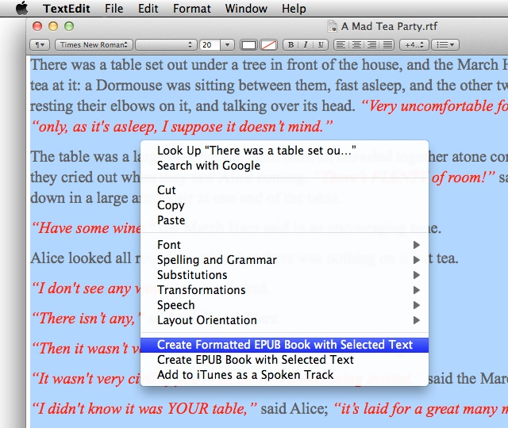
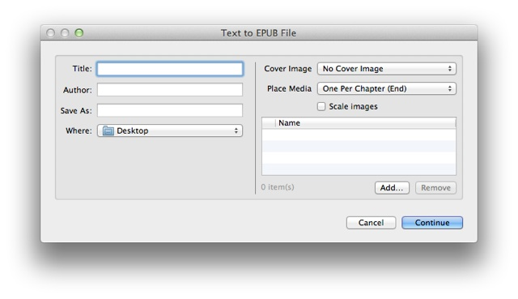
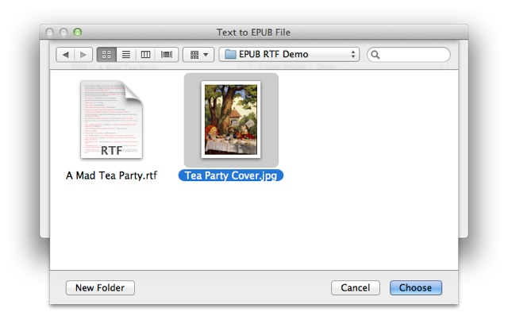
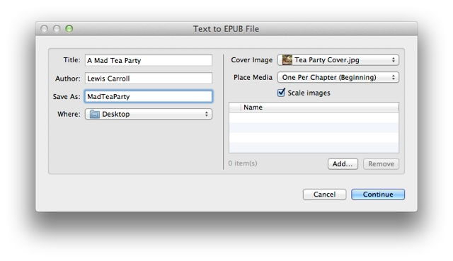
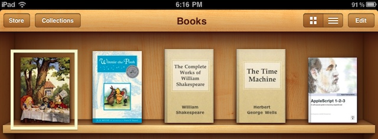

Create a Simple Formatted Digital Book
Mac OS X Lion includes built-in system-wide support for easily turning selected text or text files into fully-functional digital books, ready for viewing on your iPhone and iPad. No apps necessary! And, your books can optionally retain text formatting, and include images, audio clips, and even video clips as well.
This websie contains two tutorials demonstrating how to create digital books using the built-in automation tools of Mac OS X:
- how to create a simple single-chapter book, from text selected in an open document, that retains the formatting of the text used as its source
- how to create a multi-chapter book, using selected text files as input, and that contains images, audio tracks, and a video file.
TUTORIAL: Creating a Single-Chapter Digital Book with Formatting
This tutorial will demonstrate how to create a digital book using the formatted text selected in an open document.
Before you begin, if you haven’t already…
- install the services used in this tutorial.
- download the files used in this tutorial.
The Example Document
Begin by opening the document A Mad Tea Party.rtf, included with the demo files you downloaded. By default, the document will open in the TextEdit application.
The document is a formatted version of the seventh chapter of Lewis Carroll’s famous book, Alice in Wonderland. Note that the dialog text has been formatted to be italic and red in color. In addition, some of the dialog (the part where the Mad Hatter sings his version of Twinkle, Twinkle, Litte Star) has been center aligned. This formatting will be preserved when the text is used to create a digital book.
Select the entire contents of the document, and then right-click (Control-click) in the selected area to summon the contextual menu. Notice that the installed services appear at the bottom of the contextual menu. Select the menu item Create Formatted EPUB Book with Selected Text to launch the corresponding service.

Right-click (Control-click) on the selected text to summon the contextual menu containing the installed services.
The Automator EPUB Action Interface
Once the menu item has been selected, a window displaying the parameters and options for the Text to EPUB File Automator action used in the service workflow will appear. The left side of this dialog deals with the title and file parameters, and the right side of the dialog is for selecting the book cover image and any optional media to be included in the book.

The interface for the Text to EPUB File Automator action appears after selecting the service from the contextual menu.
Begin by first selecting the image file to be used as the cover for the digital book. Select Other..., from the Cover Image popup menu at the top right of the action interface, and then navigate to and select the image file Tea Party Cover.jpg, included with the demo files you downloaded.

The cover image for the book is chosen by selecting Other..., from the Cover Image popup menu at the top right of the action interface, and then navigating to and selecting the cover image.
Next, enter “A Mad Tea Party” as the title of the book, and “Lewis Carroll” as the author. Finally, enter “MadTeaParty” in the Save As field, and select a destination folder for the file, from the folder picker popup menu.

Fill in the book title and file information on the left of the action interface dialog. Any additional image, audio, and video content for the book is indicated on the right of the action view.
Clcik the Continue button at the bottom right of the dialog, and a new digital book file will be created in the location you chose.
Transfer the “MadTeaParty.epub” file to your iOS device by either emailing the file to yourself, and then selecting the file in the email message on the iOS device; or by adding the file to your iTunes library, and then syncing the device with that library.
Viewing in iBooks
Once the file has been added to iBooks on your iOS device, it will appear in the bookshelf in iBooks. Open the book by tapping its cover image displayed on the bookshelf:

The newly created book appears on the iBooks bookshelf.
The book will open to its table of contents, which in the case of a single-chapter book, is empty. Tap the Resume button at the top left of the window to begin reading the book:

Since the created book only has one chapter, there is no table of contents. Tap the Resume button at the top left (outlined here in red) to begin or continue reading the book.
Note that although you can assign a different typeface and size to the text, the color, style, spacing, and alignment are the same as the original text in the TextEdit document:

Since the source text for the digital book was in Rich Text format, the text color, style, and alignment properties are retained. In iBooks, the font and type size can be set by the user.
Summary
Using the services included in the Text to EPUB Services collection, you can quickly and easily create simple digital publications that you can view or share with others.
If you want to create a simple book from selected text but do not want to retain the formatting, use the Create EPUB Book with Selected Text service, which will convert the styled text to plain text before processing.
Also, you can add media, such as images, audio files, and video files, to the book using the media controls in the action view. This technique is demonstrated in the next tutorial in which you create a multi-chapter multi-media digital publication.